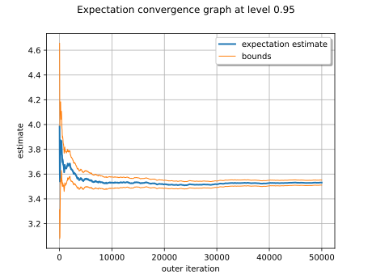

Note
Go to the end to download the full example code.
Gaussian Process Regression: propagate uncertainties¶
In this example we propagate uncertainties through a GP metamodel of the Ishigami model.
import openturns as ot
import openturns.viewer as otv
We first build the metamodel and then compute its mean with a Monte-Carlo computation.
We load the Ishigami model from the usecases module:
from openturns.usecases import ishigami_function
im = ishigami_function.IshigamiModel()
We build a design of experiments with a Latin Hypercube Sampling (LHS) for the three input variables supposed independent.
experiment = ot.LHSExperiment(im.distribution, 30, False, True)
xdata = experiment.generate()
We get the exact model and evaluate it at the input training data xdata to build the output data ydata.
model = im.model
ydata = model(xdata)
We define our GP process:
a constant basis in
;
a squared exponential covariance function.
dimension = 3
basis = ot.ConstantBasisFactory(dimension).build()
covarianceModel = ot.SquaredExponential([0.1] * dimension, [1.0])
fitter = ot.GaussianProcessFitter(xdata, ydata, covarianceModel, basis)
fitter.run()
fitter_result = fitter.getResult()
algo = ot.GaussianProcessRegression(fitter_result)
algo.run()
result = algo.getResult()
We finally get the metamodel to use with Monte-Carlo.
metamodel = result.getMetaModel()
We want to estmate the mean of the Ishigami model with Monte-Carlo using the metamodel instead of the exact model.
We first create a random vector following the input distribution :
X = ot.RandomVector(im.distribution)
And then we create a random vector from the image of the input random vector by the metamodel :
Y = ot.CompositeRandomVector(metamodel, X)
We now set our ExpectationSimulationAlgorithm object :
algo = ot.ExpectationSimulationAlgorithm(Y)
algo.setMaximumOuterSampling(50000)
algo.setBlockSize(1)
algo.setCoefficientOfVariationCriterionType("NONE")
We run it and store the results :
algo.run()
result = algo.getResult()
The expectation ( ![\mathbb{E}(Y)]() mean ) is obtained with :
mean ) is obtained with :
expectation = result.getExpectationEstimate()
The mean estimate of the metamodel is
print("Mean of the Ishigami metamodel : %.3e" % expectation[0])
Mean of the Ishigami metamodel : 3.532e+00
We draw the convergence history.
graph = algo.drawExpectationConvergence()
view = otv.View(graph)

For reference, the exact mean of the Ishigami model is :
print("Mean of the Ishigami model : %.3e" % im.expectation)
Mean of the Ishigami model : 3.500e+00
otv.View.ShowAll()